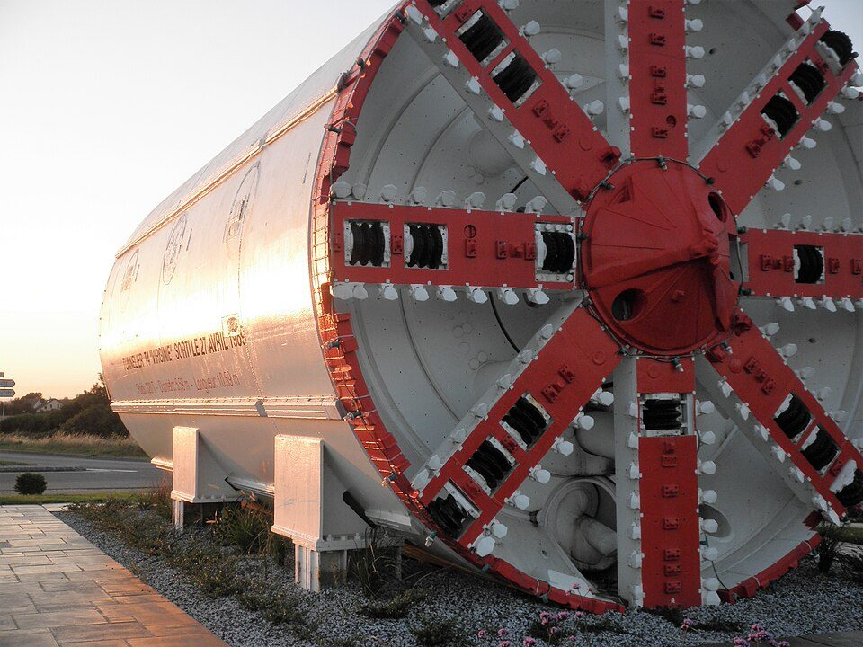
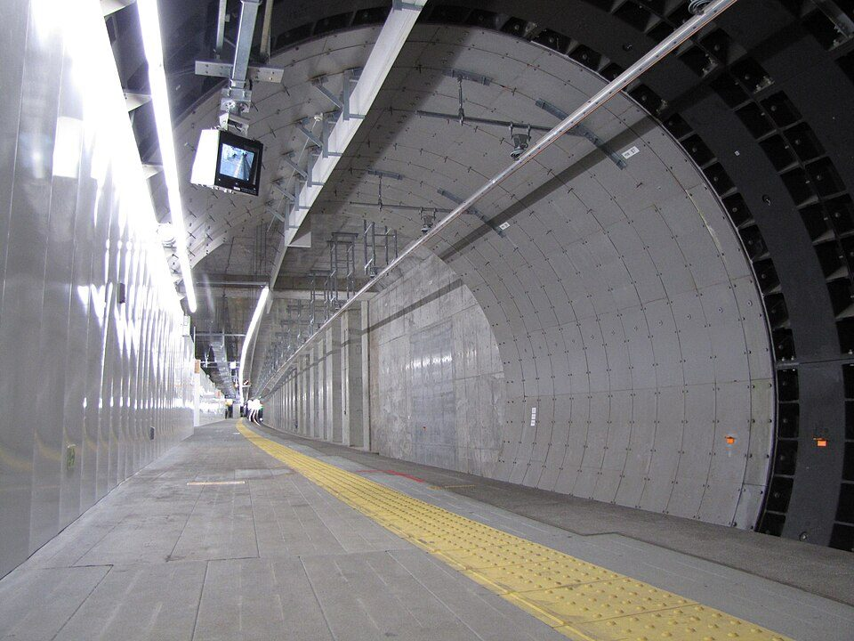

トンネルを掘っても地上の建物が崩れないのはなぜ？ 工法・支え方・計測と、陥没事故の教訓
要点まとめ
地下鉄や道路、下水道のトンネルは、住宅や道路の下を通ることがあります。地面の下を大きく掘っても、ふだん地上の建物が崩れないのは、掘る面を圧力で支え、掘った穴をすぐに壁で押さえ、掘る土の量や地表の動きを測りながら工事を進めているからです[1]。ただし「絶対に崩れない」わけではなく、陥没事故も起きています。この記事では、崩れないようにする工夫と、うまくいかなかった事例の教訓を、国土交通省や鉄道・運輸機構の資料、事故の報告書でまとめました。
「適切に工事が行われれば」
東京外かく環状道路（外環）の事業者は、2020年の陥没事故のあと、2022年3月の更新で、パンフレットの「地上への影響は生じないと考えております」という説明に、「適切に工事が行われれば」という言葉を加えました[6]。国のガイドラインも、シールド工法を「地盤に応じて適切な形式で適切な施工を行えば安全に工事を遂行できる工法」としています[1]。安全は工法の名前だけで決まるのではなく、地盤に合った施工と管理で守られている、ということだと考えられます（筆者の見解）。

掘ると、地面の中で何が起きるか
掘る面のバランスが崩れると、地表が動く
地盤が緩み、地表の沈下や隆起につながる
国土交通省のシールドトンネル工事のガイドライン（2021年12月）は、土砂を取り込みすぎたり、前面の圧力が変わったりして切羽（掘っている面）のバランスを失うと、近くの地盤が緩み、地表面の沈下や隆起を引き起こすおそれがあると説明しています[1]。博多駅前の陥没事故の報告書も、トンネル内の水抜きや土砂の撤去で「力学的な均衡」が再び変わると、トンネルや周りの地盤の崩壊に至るおそれがあると注意しています[3]。
地盤も、アーチのように自分を支える
石を組んだアーチと同じ「押し合う力」が働く
博多駅前の事故の報告書は、石のブロックをアーチ状に組むと互いに押し合い、接着しなくても形を保てること、トンネルを掘るときも同じ効果が期待できることを説明しています[3]。アーチが平たくなると押し合う力が弱まり、やがて形を保てなくなります[3]。山岳トンネルの工法（NATM）は、トンネルの周りの地山（もとの地盤）がトンネルを支えようとする力を生かす工法です[7]。
地下水の圧力も大きい
博多駅前では、約1気圧以上の水圧がかかっていた
博多駅前の現場では、地下水位が地表から約2.5mの位置にあり、トンネルの上の地層の境目に、水頭（水の高さに換算した圧力）で約10m（約1気圧に相当）以上の高い水圧がかかっていました[3]。外環の事業者は、地盤沈下の要因として地下水位の低下を挙げ、シールド工法はトンネルの密閉性が高く、地下水への影響が小さいと説明しています[8]。
掘り方は場所で変わる
道路トンネルは全国に10,597箇所、総延長は約5,111kmあります（2024年3月31日時点）[9][10]。トンネルの工法は、目的や地形・地質などの条件によって使い分けます[7]。
| 工法 | 主に使う場所 | 掘り方 | 周りの支え方 |
|---|---|---|---|
| 山岳トンネル工法（NATM） | 山岳部。道路トンネルで最も多く、都市部で使う例も多い[7] | 爆薬や大型の機械で掘る[7] | 吹付けコンクリート・ロックボルト・鋼製支保工で、地山の支える力を生かす[7][11] |
| シールド工法 | 都市部の軟らかい地盤。下水道・道路・地下鉄に多い[1][12] | 鋼製の筒（シールド）の前面の刃で掘り、ジャッキで押して進む[11][12] | 泥土や泥水の圧力で掘る面を支え、後ろにセグメント（壁のブロック）を組む[1] |
| 開削工法 | 都市部の比較的浅い場所。地下駅に多い[12][11] | 地上から掘り、トンネルを造って埋め戻す[12] | 鋼矢板や地下連続壁などの土留めで、周りの土を押さえる[13] |
| 推進工法 | 下水道管など。交通量の多い道路や、管を深く埋める場所[14] | 立坑（縦穴）から次の立坑へ、掘進機で掘り進めながら管を布設する[14] | 地上を掘り返さない「非開削工法」の一つ[14]。支え方の公的な一般向けの説明は見つからなかった |
このほか、硬い岩盤を掘るTBM工法や、海底などに沈めた函（はこ）をつなぐ沈埋トンネル工法があります[12]。
地下鉄は「駅は開削、駅の間はシールド」
開削は地上の交通や建物への影響が大きいため
鉄道・運輸機構は、地下鉄の建設の初期は開削工法が主だったものの、地上から掘るため地上の交通や建物などへの影響が大きく、いまは駅の部分を開削工法、駅の間のトンネルをシールド工法で掘るようになっていると説明しています[11]。
都市NATM：周りを緩ませないよう、分けて掘る
掘る断面を上下左右に分けるCRD工法など
都市NATMは、山岳トンネルの標準の工法であるNATMを都市のトンネルに応用したもので、地表の建物などへの影響をなくすため様々な改良がされています[11]。鉄道・運輸機構が開発したCRD工法は、トンネルの周りの地山をできるだけ緩ませないよう、掘る断面を左右上下に分けて掘る工法です[11]。
開削：掘った穴の壁を「土留め」で押さえる
深さ1.5mを超えたら、原則として土留めをする
横浜市の下水道の設計指針は、掘る深さが1.5mを超える場合は、原則として土留め工を施すとしています[13]。土留めには、鋼矢板、親杭横矢板、地下連続壁などの工法があります[13]。掘った底の地盤の安定も確かめ、軟弱な粘土の地盤ではヒービング、地下水位の高い砂の地盤ではボイリングといった現象を検討します[13]。
くわしく
- 博多駅前の報告書は、開削で掘り直す場合、土留めの剛性を高めることや地表の変位の計測を求めた[3]
シールド工法の支え方

シールド工法は、加圧した泥水や泥土などで切羽の土圧と水圧に対抗して切羽を安定させながら掘り進み、セグメントを組み立てて地山を保持する工法です[1]。非常に軟弱な地盤から軟岩までの地盤に使われ、都市の下水道・道路・地下鉄の工事に多く採用されています[1]。
掘る面を、泥の圧力で押し返す
泥水式と泥土圧式の2つの方式がある
泥水式シールドは、比重や粘りけを整えた泥水で掘る面に泥の膜をつくり、泥水の圧力で切羽を支えます[1]。泥土圧シールドは、掘った土に添加材を混ぜて、流れやすさ（塑性流動性）と水を通しにくい性質（止水性）を保ちます[1]。どちらも切羽は隔壁で仕切られていて直接見えないため、計器の値から切羽の状態を間接的に把握します[1]。
圧力は、上限と下限の間に保つ
想定外の大きな変化は、異常のサインとして扱う
ガイドラインは、泥水式では泥水圧、泥土圧式ではチャンバー（カッターのすぐ後ろの部屋）の圧力に、上限と下限の管理基準値を設け、その範囲に収まっているかを管理するのが一般的だとしています[1]。想定していない大きな変化があれば、施工に何らかの異常があった可能性を示すものとして、ただちに原因を調べて対応する必要があるとしています[1]。
掘る土の量：多すぎても少なすぎてもいけない
多すぎると沈下、少なすぎると隆起のおそれ
掘った土を取り込みすぎると、周りの地盤が緩み、地表面の沈下などにつながるおそれがあります。逆に取り込みが足りないと、地盤の隆起などにつながるおそれがあります[1]。ガイドラインは、取り込む量を適切に管理し、異常の兆候を早く見つけるよう求めています[1]。大きな断面のシールドは掘る土の量が大きいため、管理基準値の設定や対応を慎重に検討する必要があるとしています[1]。
外側のすき間は、すぐに埋める
裏込め注入で、地山の緩みと沈下を防ぐ
裏込め注入は、セグメントの外側のすき間（テールボイド）に材料を詰めて、セグメントを固定し、地山の緩みと沈下を防ぐものです[1]。ガイドラインは、すみやかに確実に詰めること、注入の圧力と量で管理することを求めています[1]。注入量が想定を大きく上回ったときは、地山の部分的な崩落や空洞ができている可能性も考えて調べます[1]。
地上を守る管理の流れ
工事の前・最中・後に、次のような管理が行われます。国の要領・ガイドラインと、外環や千葉市の例をもとに並べました。
- 工事の前
周りの建物などを調べる
国の要領は、地盤変動で建物などに損害が出るおそれがあるとき、着工前か施工中に、地質・地下水・建物の現況などを調べるとしている[15]
- 掘る前から
地表の動きや地下水位を測り始める
工事が原因かどうか確かめられるよう、掘る前から測ることが重要とされる[1]
- 掘っている間
圧力・掘る土の量・裏込め注入を管理する
地表などの計測値と合わせて、総合的に分析しながら進める[1]
- 掘った後
地表を測り続け、巡回する
外環では、掘った後おおむね1か月、24時間体制で毎時1回、監視員が歩いて巡回する[2]
- その間ずっと
住民に情報を伝える
地盤の変位などの結果を、掘進の状況と併せて住民に提供するのが望ましいとされる[1]
- 工事の後
もう一度、建物を調べる
千葉市の下水道工事では、工事前と完了後に家屋等調査を行い、被害の有無を確かめている[14]
家屋の事前調査（外環の例）
柱の傾きや、壁・基礎のひび割れを記録する
外環の事業者は、万が一、工事が原因で建物などに損害が出たときに補償するため、工事の前に建物などの状況を調べると説明しています[16]。調査では、柱の傾き、壁や基礎のひび割れなどを、スケッチ・写真・調書で記録します[17]。本線シールドトンネル工事の家屋事前調査は、2015年3月から順次行われてきました[16]。
地表の傾きは「1,000分の1rad以下」（外環の管理値）
水平に10m進んで約1cm下がる程度の傾き（筆者の換算）
外環のシールド工事は、地表の変形を、掘る前と後の最大の傾き（地表面傾斜角）で管理し、1,000分の1rad以下を管理値にしています[2]。事業者は、これを家屋に影響を与えない地盤変位の目安とし、日本建築学会の「小規模建築物基礎設計の手引き」（1988年）を参考に設定したと説明しています[18]。1,000分の1radは、水平に10m進むと約1cm下がる程度の傾きです（筆者の換算）。
調べても、不測の事態はゼロにできない
大断面の工事では、事故時の避難も事前に相談を
ガイドラインは、地盤の中の工事では調査や条件の把握に最大限努めても限界があり、不測の事態が起きる可能性を完全には排除できない場合があるとしています[1]。そのため、住宅地などでの大きな断面のシールド工事では、事故が起きたときの周知や住民の避難について、自治体・警察・消防と事前に相談しておくことが望ましいとしています[1]。
深い地下を使う「大深度地下」
大都市の地下は混み合い、施設も深くなっています。都営大江戸線の飯田橋駅〜春日駅の間では、最大深度が49mです[20]。そこで、ふだん使われない深い地下を公共の事業に使えるようにした法律があります。
大深度地下とは
地表から40mと「支持地盤＋10m」の、深い方より下
「大深度地下の公共的使用に関する特別措置法」（2000年5月19日成立、2001年4月1日施行）[21]は、地下室などに通常使わない深さと、建物の基礎ぐいを支える地盤（支持地盤）の最も浅い部分に一定の距離を加えた深さの、いずれか深い方以上の深さの地下を「大深度地下」としています[22]。政令は、前者を地表から40m、加える距離を10mと定めています[23][20]。支持地盤は、基礎ぐいが1平方メートルあたり2,500キロニュートン以上の許容支持力をもつ地盤です[23]。
使えるのは、三大都市圏の公共の事業
道路・鉄道・上下水道などの事業に限られる
対象地域は、首都圏・近畿圏・中部圏の一部の区域です[24]。対象の事業は、道路、河川、鉄道、電気通信、電気、ガス、上下水道などの公共の利益となる事業です[24]。認可の要件の一つに、地上に通常の建物が建てられても、その構造に支障がない耐力を施設に持たせることがあります[24]。
補償は「請求を待って」
通常は損失が生じないので、事前の補償なしで使える
国土交通省は、大深度地下は通常利用されない空間なので、使用権を設定しても通常は補償すべき損失が発生しないと説明しています[24]。そのため事前の補償なしに使用権を設定でき、例外的に補償が必要な場合は、土地所有者などからの請求を待って補償します[24]。これは地下を使う権利についての仕組みで、外環では、陥没事故で建物などに生じた損害は別に補償されています[18]。
| 事業 | 認可 | 大深度地下の範囲 |
|---|---|---|
| 神戸市大容量送水管 | 2007年6月19日 | 本線12.8kmのうち約270m |
| 東京外かく環状道路（関越道〜東名高速） | 2014年3月28日 | 16.2kmのうち約14.2km |
| 中央新幹線（品川・名古屋間） | 2018年10月17日 | 約285.6kmのうち約50.3km |
| 寝屋川北部地下河川 | 2019年3月18日 | 約4.6kmのうち約2.2km |
出典: 国土交通省の一覧[25]。閲覧した時点で、国土交通省のページには「現在申請されている案件はありません」と書かれていました[21]。外環は、本線トンネルの大部分を地下41m以深の大深度地下にしています[18]。
うまくいかなかった事例と教訓
トンネル工事に関係する主な陥没の事例と、報告書などが示した原因です。原因は、報告書の言葉どおり「推定」などの度合いも含めて書いています。
| 事例 | 工法・規模 | 原因の見方 | その後 |
|---|---|---|---|
| 博多駅前（福岡市、2016年11月8日） | 都市NATM（地下鉄七隈線の延伸工事）[3]。陥没は幅約27m×長さ約30m×深さ約15m[19] | 地層の強度・厚さと地下水圧の2つを「可能性が高いもの」と推定[3] | 11月15日午前5時に道路の通行を再開[19] |
| 新横浜（横浜市、2020年6月12日・30日） | 泥水式シールド。直径9.7m、陥没箇所の土被り18〜19m[26]。場所は横浜市港北区[27] | 「複合的な要因によりシールドが土砂を過剰に取込み、空隙が形成されたこと」が原因と推定[26] | 2020年9月2日に掘削を再開[28]、11月27日に新横浜駅に到達[26] |
| 東京外環（調布市、2020年10月18日） | 泥土圧シールド。直径16.1m、陥没箇所の土被り47m[26]。場所は調布市東つつじヶ丘[4] | 閉塞を解除するために行った「特別な作業に起因するシールドトンネルの施工」が要因と推定[29] | 地盤補修中。陥没地域周辺の本線は「掘進停止中」（2026年8月の資料）[18] |
| 参考：八潮（埼玉県、2025年1月28日） | トンネルを掘る工事中の事故ではない。1983年にシールド工法で造られた下水道管[5] | 「硫化水素によって腐食した下水道管に起因するもの」と考えられる[5] | 原因究明委員会の報告書は2026年2月19日[5] |
土被りは、地表からトンネルの上端までの土の厚さです。
外環：特殊な地盤で起きた「閉塞」と、その解除作業
緩みが煙突状に上へ広がったと推定されている
有識者委員会の報告書（2021年3月）によると、陥没箇所の周りは、細かい粒が少なく礫が多い砂の地盤で、掘る断面の上に流動化しやすい単一の砂層が地表近くまで続く、外環全線の中でも特殊な地盤でした[29]。夜間の休止中にチャンバー内の土砂と気泡材が分かれて沈み、締め固まって、カッターが回らなくなる「閉塞」が起きました[29]。これを解除する作業で土圧の均衡がとれず、地山から土砂が流れ込んで緩みが生じ、煙突状に上へ広がったと推定されています[29]。
外環の再発防止：掘る土の量の管理を厳しく
管理値を±10％から±7.5％に引き締めた
有識者委員会（2021年3月19日）は、排土の管理値を、前の20リングの平均に対し±10％（1次）・±20％（2次）から、±7.5％・±15％に厳しくし、排土率による管理を毎リング行うことを確認しました[31]。細粒分が10％以下になりそうな地盤では、ベントナイトなどの鉱物系の添加材の使用も検討するとしています[31]。
外環の補償と地盤補修の状況
2026年7月31日時点で、地盤改良体の約7割が完成
事業者の資料によると、2026年7月31日時点で、補償対象地域の世帯数は約1,000です。家屋調査の相談があった約290世帯は調査を終え、家屋の補修などを実施中または完了しています[18]。地盤補修は2023年8月に始まり、地盤改良体約220本のうち概ね7割の造成が終わりました[18]。家屋の解体が済んだ箇所の補修は、2026年秋ごろに完了する予定です（2026年10月2日時点）[32]。
新横浜：取り込みすぎに、掘削中は気づけなかった
データを細かく分析し直して、初めて分かった
国土交通省の事例集（鉄道・運輸機構への聞き取り）によると、掘削中のデータの分析では、土砂を過剰に取り込んだ兆候はうかがえませんでした。その後、停止中も含めた全工程のデータを分析すると、1リングあたりの掘った土の量（乾砂量）が想定を超えたリングが複数ありました[26]。再発防止策として、リングごとに全工程でリアルタイムかつ連続的に、土砂の取り込みすぎがないかを監視することなどが挙げられています[26]。
博多駅前：事故の前には分からなかった地層の弱さ
工法の選び方そのものの誤りではない、とされた
原因を調べた委員会の報告書は、トンネルの上の水を通しにくい風化岩の層の強度や厚さが局所的に足りなかったことと、高い地下水圧の2つを、可能性が高い要因と推定しました[3]。厚さは約2.79〜3.67mを見込んでいたのに対し、事故後の調査では約1.90〜2.28mしかなかったことが分かりました[3]。ただし、設計時の地質調査の頻度は通常より少ないとまでは言えず、事故前に正確に把握するのは困難だったとしています[3]。そのうえで、都市NATMの工法の選定そのものが誤っていたということではないとしています[3]。
八潮市の陥没（2025年）は、トンネル工事中の事故ではない
2025年1月28日、埼玉県八潮市の県道の交差点で道路が陥没し、トラック1台が転落しました。運転手は5月2日に救出され、同日に死亡が確認されました[5]。埼玉県の原因究明委員会の報告書（2026年2月19日）は、この陥没を「硫化水素によって腐食した下水道管に起因するもの」と考えられるとしています[5]。管は1983年にシールド工法で造られた内径4.75mの下水道管で、事故の時点で整備から42年がたっていました[5]。委員会は、腐食した管の小さなすき間から土砂が流れ出して空洞ができ、陥没に至った流れが有力と判断しています[5]。トンネルを掘っている最中の事故ではなく、完成から長い年月がたった管の腐食が原因と考えられている点で、ほかの事例とは違います。下水道の使用を控える呼びかけは、12市町・約120万人に及びました[34]。
事故から生まれた国のガイドライン
2020年の鉄道と道路の事故を受け、2021年12月に策定
国土交通省の検討会は、2020年に鉄道事業と道路事業のシールドトンネル工事で地表に影響を与える事故が起きたことを受け、2021年12月に「シールドトンネル工事の安全・安心な施工に関するガイドライン」をまとめました[1]。博多駅前の事故などを受けて、計画・設計・施工・維持管理の各段階で地盤のリスクを評価するための「土木事業における地質・地盤リスクマネジメントのガイドライン」（2020年3月）も作られています[35][1]。
事例から見える教訓（筆者のまとめ）
今回確認できなかった点
- 推進工法や開削工法の支え方についての、国や土木学会の一般向けの解説
- 地表の沈下や傾きの、全国共通の数値の基準があるかどうか（外環や博多駅前の値は、それぞれの工事の例）
- 外環の東名側の本線の掘進を再開する時期と、補償の総額
- 新横浜の陥没についての、鉄道・運輸機構の委員会の報告書の本文（国土交通省の事例集で確認した）
- 新横浜の陥没の大きさが、資料によって違う理由
- 鉄道トンネルの数の、最新の値
関連する記事
出典（35件）
閲覧日はいずれも2026年11月10日〜11日
- シールドトンネル工事の安全・安心な施工に関するガイドライン（2021年12月、PDF）（国土交通省（シールドトンネル施工技術検討会））
- 報告書 8.再発防止対策について（2021年3月、PDF）（東日本高速道路（NEXCO東日本）・東京外環トンネル施工等検討委員会 有識者委員会）
- 福岡市地下鉄七隈線延伸工事現場における道路陥没事故の原因究明について 報告書 概要（PDF）（国土交通省（福岡地下鉄七隈線延伸工事現場における道路陥没に関する委員会））
- 報告書 1.陥没・空洞の概要と発生経緯（2021年3月、PDF）（東日本高速道路（NEXCO東日本）・東京外環トンネル施工等検討委員会 有識者委員会）
- 原因究明委員会報告書（2026年2月19日、PDF）（埼玉県（八潮市で発生した道路陥没事故に関する原因究明委員会））
- よくあるご質問（一覧と更新履歴）（国土交通省 関東地方整備局 東京外かく環状国道事務所）
- メンテにゅ～す「トンネルのいろいろな種類」（2022年2月版、PDF）（国土交通省 近畿道路メンテナンスセンター）
- よくあるご質問 Q4・Q5（地下水・地盤沈下）（PDF）（国土交通省 関東地方整備局 東京外かく環状国道事務所）
- 道路統計年報2025 表74 トンネル現況総括表（Excel）（国土交通省 道路局）
- 道路統計年報（トンネルの現況は令和6年3月31日時点）（国土交通省 道路局）
- 鉄道建設技術：トンネル（鉄道建設・運輸施設整備支援機構（鉄道・運輸機構））
- メンテにゅ～す「その他のいろいろなトンネルの種類」（2022年4月版、PDF）（国土交通省 近畿道路メンテナンスセンター）
- 横浜市下水道設計指針（管きょ編）同解説 令和8年度改訂版（PDF）（横浜市）
- 汚水管の整備（未普及地域の解消）（千葉市）
- 公共事業に係る工事の施行に起因する地盤変動により生じた建物等の損害等に係る事務処理要領（PDF）（国土交通省）
- よくあるご質問 Q11（家屋事前調査）（PDF）（国土交通省 関東地方整備局 東京外かく環状国道事務所）
- よくあるご質問 Q12（家屋事前調査の内容）（PDF）（国土交通省 関東地方整備局 東京外かく環状国道事務所）
- 地盤補修の施工状況等に関するオープンハウス パネル資料（2026年8月29日、PDF）（東日本高速道路（NEXCO東日本）関東支社 東京外環工事事務所）
- 地下鉄七隈線延伸建設工事における道路陥没事故と設計・施工の経緯について（2017年1月、PDF）（福岡市交通局）
- 大深度地下利用：大深度地下とは（国土交通省）
- 大深度地下利用（国土交通省）
- 大深度地下の公共的使用に関する特別措置法（平成12年法律第87号）（e-Gov法令検索）
- 大深度地下の公共的使用に関する特別措置法施行令（平成12年政令第500号）（e-Gov法令検索）
- 大深度地下の公共的使用に関する特別措置法の概要（対象地域・認可の主な手続き）（国土交通省）
- 大深度地下使用法の使用認可を受けた事業（国土交通省）
- 【付録2】シールドトンネル工事に関する事例集（2021年12月、PDF）（国土交通省（シールドトンネル施工技術検討会））
- 相鉄・東急直通線 新横浜トンネル工事現場付近での地表面（道路）陥没について（2020年6月12日、PDF）（鉄道・運輸機構）
- 相鉄・東急直通線 新横浜トンネル工事現場付近での地表面（道路）陥没箇所の道路交通規制の解除およびトンネル掘削工事の再開について（2020年9月2日、PDF）（鉄道・運輸機構）
- 報告書 6.陥没・空洞の推定メカニズム（2021年3月、PDF）（東日本高速道路（NEXCO東日本）・東京外環トンネル施工等検討委員会 有識者委員会）
- 第22回 東京外環トンネル施工等検討委員会 議事概要（2020年10月19日、PDF）（国土交通省 関東地方整備局（東京外環トンネル施工等検討委員会））
- 第7回 東京外環トンネル施工等検討委員会 有識者委員会 議事概要（2021年3月19日、PDF）（東日本高速道路（NEXCO東日本））
- オープンハウス及び意見交換の場におけるご意見とその対応のとりまとめ（2026年10月2日時点、PDF）（東日本高速道路（NEXCO東日本）関東支社 東京外環工事事務所）
- 地盤補修の施工状況等に関するオープンハウス及び意見交換の場におけるご意見とその対応のとりまとめ（2025年10月3日時点、PDF）（東日本高速道路（NEXCO東日本）関東支社 東京外環工事事務所）
- 八潮市における道路陥没事故の現状について（資料2、PDF）（国土交通省 水管理・国土保全局 下水道部）
- 土木事業における地質・地盤リスクマネジメントのガイドライン 概要とポイント（PDF）（国土交通省 技術調査課・土木研究所）
写真・画像の出典（2件）
- トンネル掘削機の前面（英仏海峡トンネルで使われたもの）
写真: Bärbel Miemietz／Wikimedia Commons（CC BY-SA 4.0） - トンネルの一部として使われているシールドマシンの外殻（小田急線 世田谷代田駅付近）
写真: E3uematsu／Wikimedia Commons（CC BY-SA 3.0）